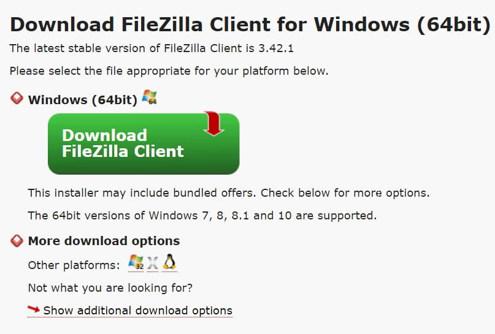
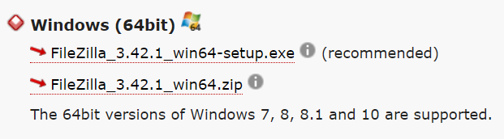
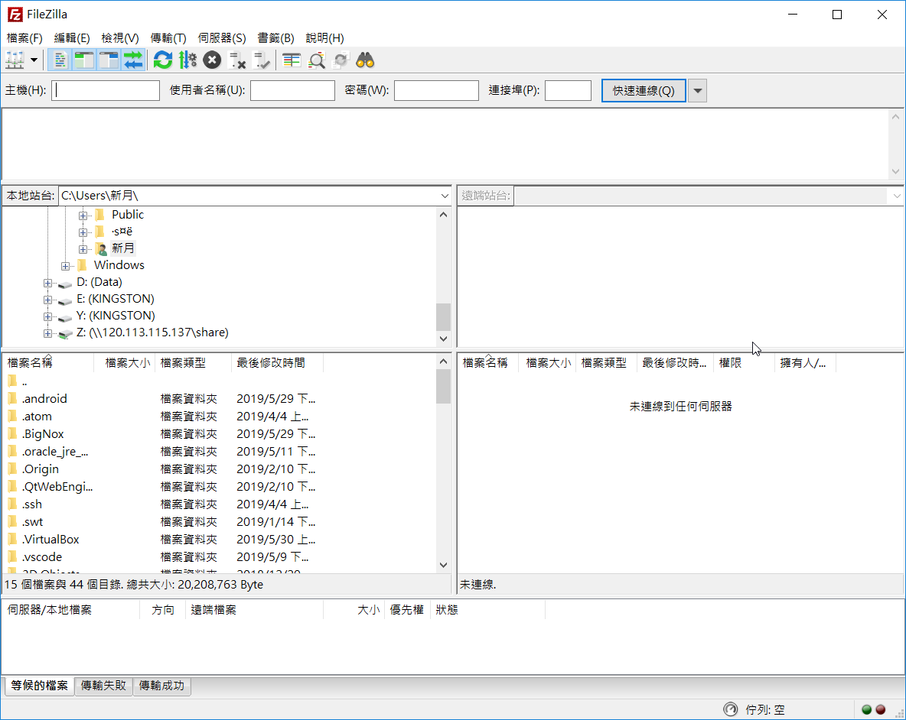
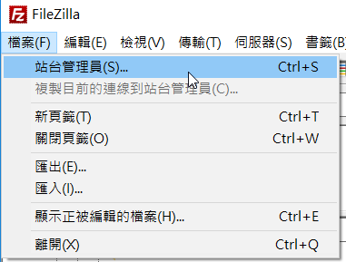
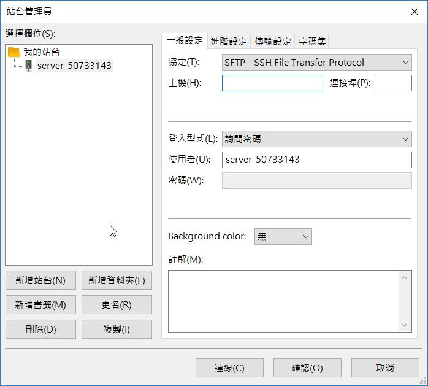

這是一款免費的FTP軟體 官網(https://filezilla-project.org)
進入官網後點擊這個進入下載頁面
進來後會看到這個 請點擊最下面的 Show additional download options

進去後會看到各系統的載點 我們下載windows(64bit)的zip可攜版本

下載完成後直接解壓縮到隨身碟就可以使用了
開啟後長這樣

點擊左上角的檔案打開站台管理員

之後點擊新增站台 名稱自訂 協定使用SFTP 主機輸入Ubuntu的IP 連接埠留白即可
登入形式選詢問密碼 使用者就是Ubuntu安裝時設定的name 設定完後就可以確認保存
